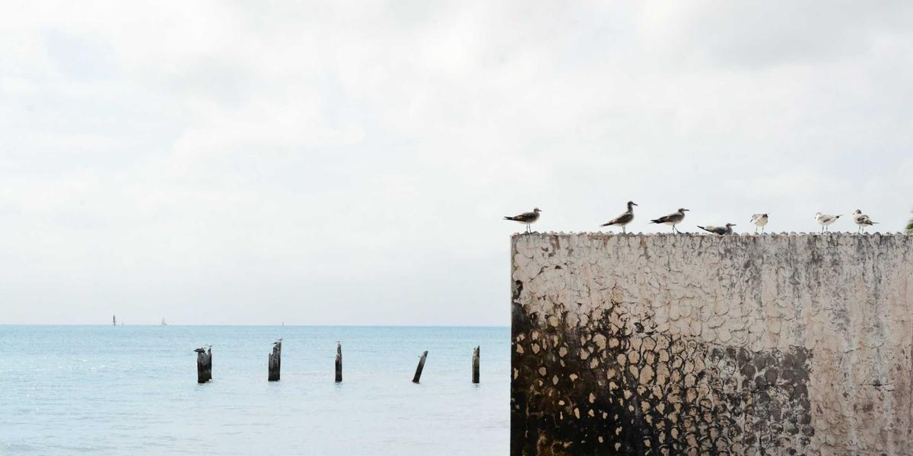
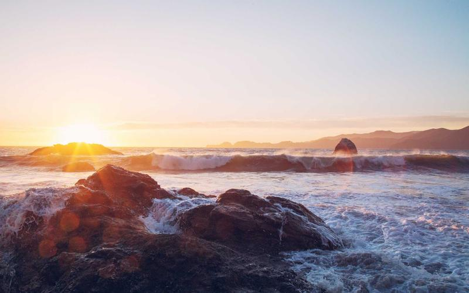
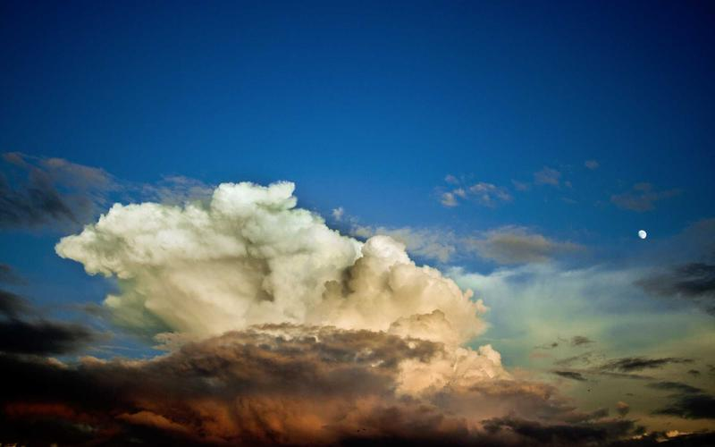
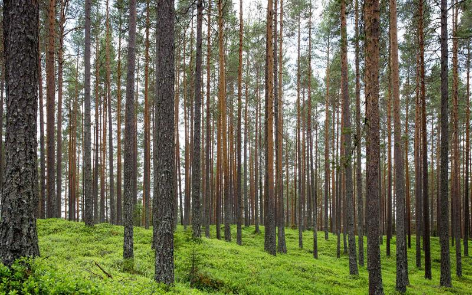
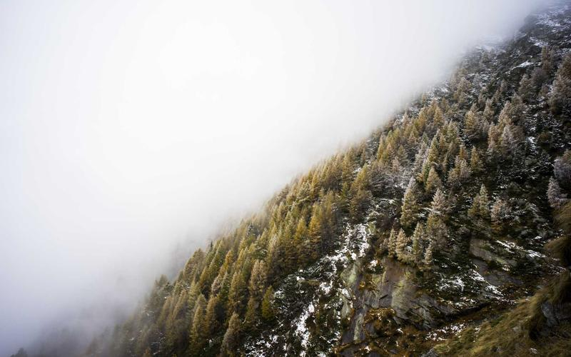
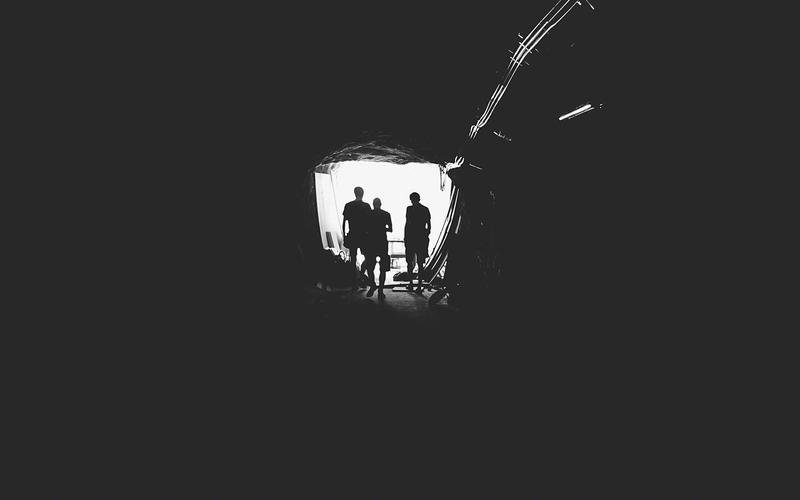
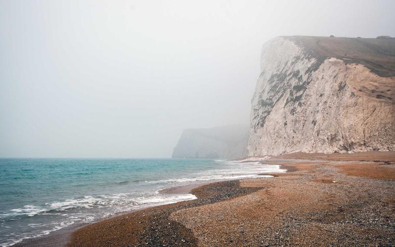

Top 7 Hidden Trails in the Swiss Alps
Skip the crowded Jungfrau loops. These high-pass trails through Graubünden deliver solitary glacier panoramas, wild tarns, and rustic shepherd refuges.
6 min read • Updated October 2026
Practical expedition guides, lightweight packing strategies, and route notes for independent travellers.
Skip the crowded Jungfrau loops. These high-pass trails through Graubünden deliver solitary glacier panoramas, wild tarns, and rustic shepherd refuges.
6 min read • Updated October 2026
Everything you need to navigate sleeper trains, border crossings, street food safety, and SIM card logistics across Thailand, Laos, and Vietnam.
9 min read • Updated October 2026
Cut your base weight without compromising safety. Our tested list covers Dyneema tarps, quilt insulation ratings, and titanium cooksets.
5 min read • Updated October 2026
High-altitude aridity demands disciplined hydration and cold-weather desert layering. Field notes on traversing Chile’s Valle de la Luna.
7 min read • Updated October 2026
Step-by-step insulation, 12V solar electrical setup, and basic framing tips to convert an empty cargo van into an off-grid home on wheels.
11 min read • Updated October 2026
How Norway’s 'Allemannsretten' (Right to Roam) allows you to pitch a tent in some of the most dramatic landscapes on earth for free.
8 min read • Updated October 2026Understanding pole architecture, snow loading resilience, double-wall ventilation, and storm guy-out points for extreme weather.
6 min read • Updated October 2026
Realistic monthly budgets, overnight coach safety protocols, and scenic highland itineraries through Peru, Bolivia, and Ecuador.
10 min read • Updated October 2026Beyond packing out candy wrappers: proper greywater disposal, camp sanitation, campfire restrictions, and minimizing trail erosion.
4 min read • Updated October 2026Navigating haloclines, cavern buoyancy control, guide ratios, and cavern diver certification prerequisites in Quintana Roo's underground river network.
7 min read • Updated October 2026